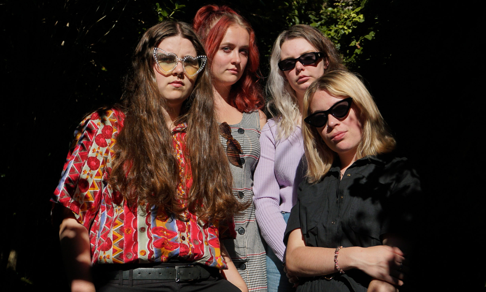
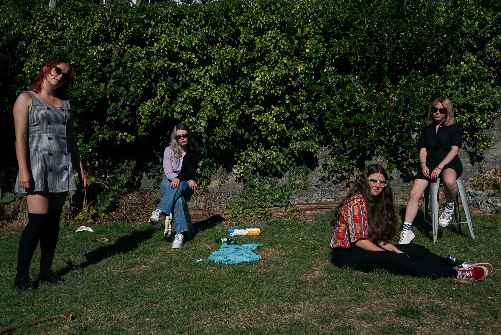

About the band
If The Beths and Same Name Confusion came together in a Scott Pilgrim vs The World type stand off it would sound almost exactly like Sure Boy. A perfectly harmonised rant about ‘evil exes’, unfortunate encounters on the San Fran balcony and a song about enjoying eating lemons for good measure.
For a more literal depiction of Sure Boy, they are an all female Wellington band with an alternative pop rock sound, made up of Simone McCarthy (Guitar/Vox), Freyja Appleyard (Drums), Lily Fulton (Bass/Guitar) and Beth Steward (Main Vox/Bass). They formed in early 2020 which turned out to be incredible unlucky timing to start a new band. Almost as soon as they had put together an EP and were ready to start playing live, New Zealand went into a month-long lockdown and the thought of going to a real gig seemed like a distant dream. Finally, now that the covid cloud seems to be lifting, Sure Boy is recording their first EP and has an array of live performances lined up over the coming year.
The band was initially created as a response from lead vocalist Beth Steward after going to many gigs in Wellington and noticing it was lacking some estrogen influence. There are a few amazing female artists, such as Wiri Donna, Sofia, Lilith, starting to make significant headway in the primarily male dominated headlines. Beth found herself wishing there were more female bands to give the male bands a run for their money (don’t worry all love here boys, nothing wrong with a bit of friendly competition).
Their song writing style leans towards finding humour in less than ideal situations, including toxic relationships, unrequited crushes, flawed personalities and questionable coping mechanisms. Sure Boy draws some of their songwriting inspiration from musical influences such as Stella Donnelly, The Beths and Same Name Confusion to create a mixture of fun pop melodies, odd lyrics and unexpected guitar riffs and chords.